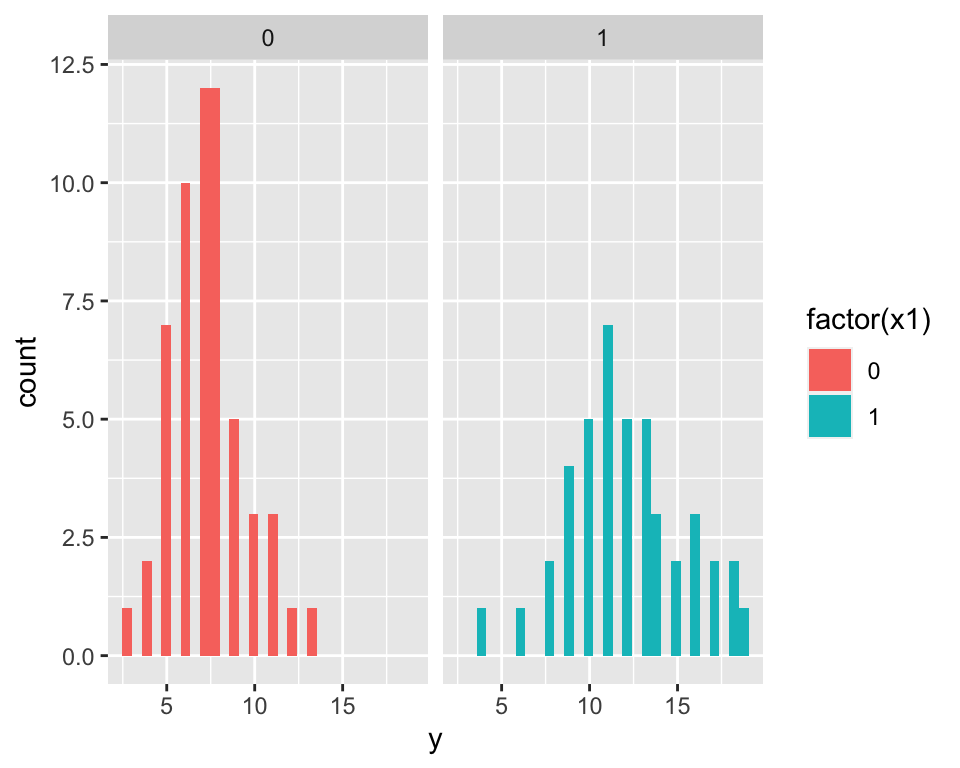
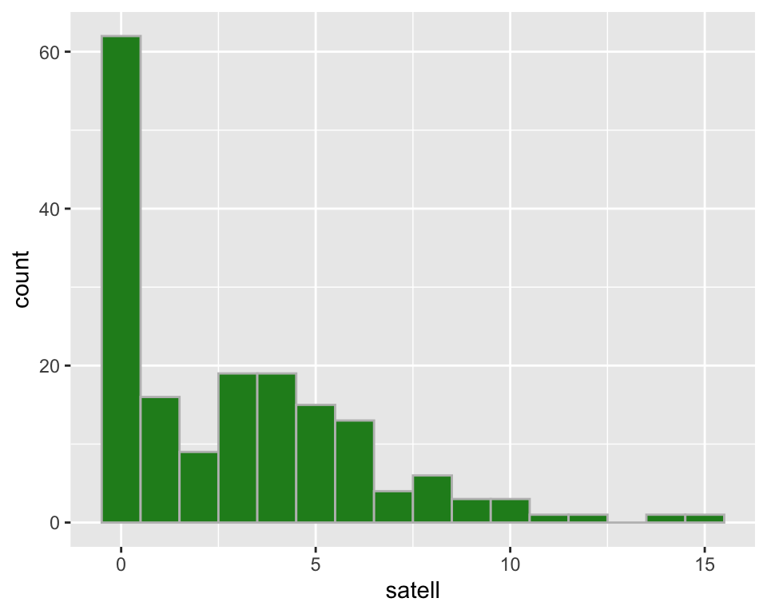
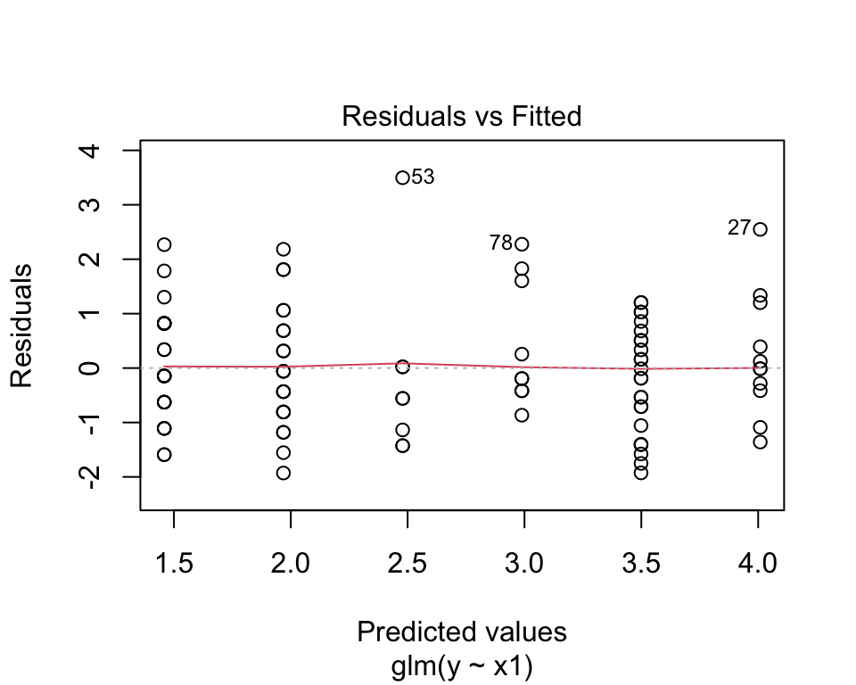
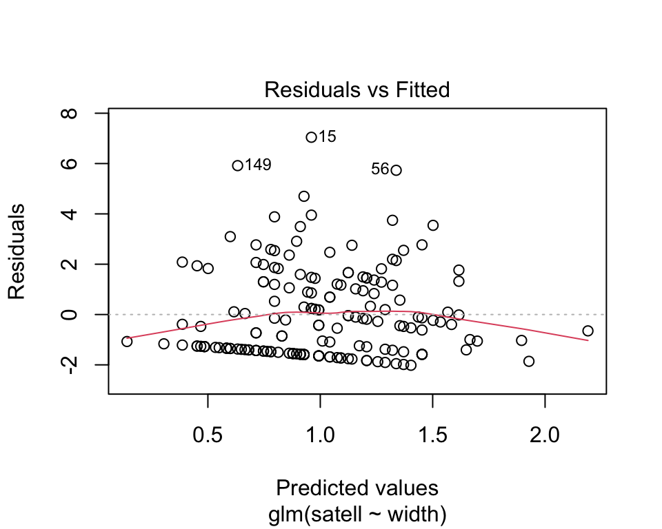
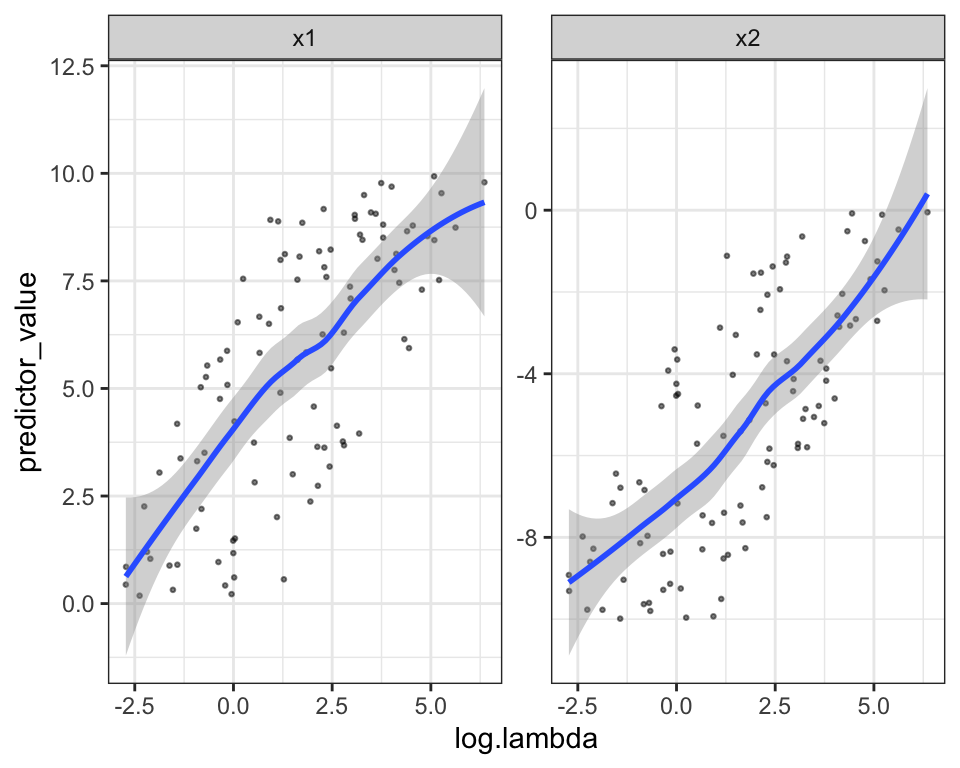
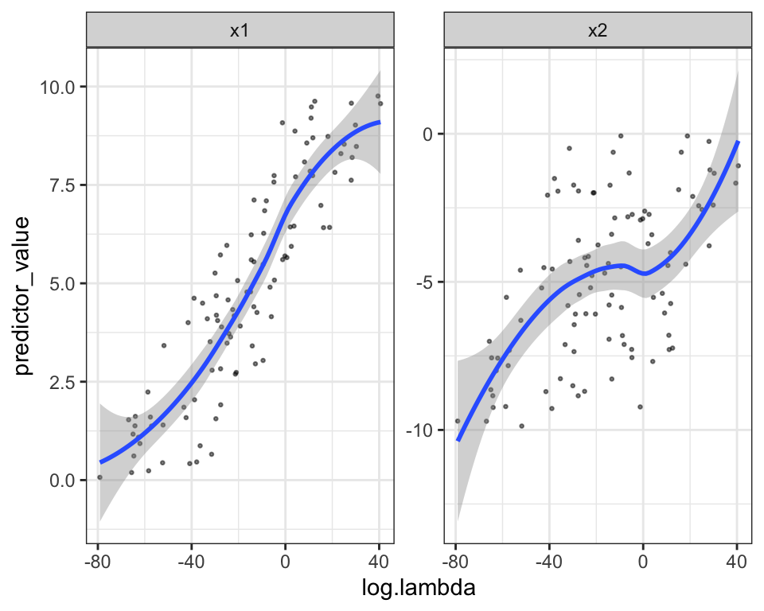
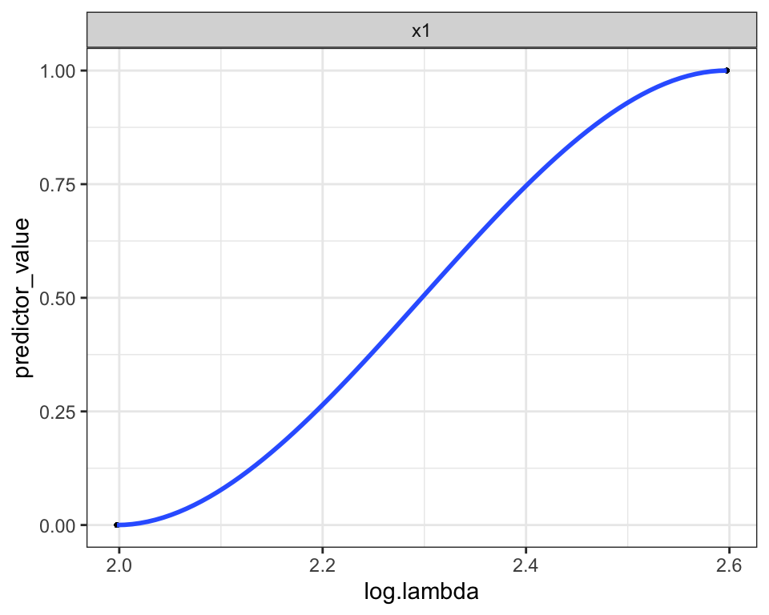

poisson_function <- function(fn_formula, data, predict = F) {
number_omitted <- nrow(data) - nrow(na.omit(data))
data <- na.omit(data)
vars <- all.vars(as.formula(fn_formula))
y_name <- vars[1]
x_name <- vars[2:length(vars)]
n <- nrow(data)
Y <- matrix(data[, y_name], nrow = n, ncol = 1)
X <- matrix(cbind(rep(1, n)))
# take in categorical data
var_names <- vector("character")
for (i in x_name) {
if (suppressWarnings(all(!is.na(as.numeric(as.character(data[, i])))))) {
X <- cbind(X, as.numeric(as.character(data[, i])))
var_names <- c(var_names, i)
} else {
categories <- sort(unique(data[, i]))
for (j in categories[2:length(categories)]) {
new_col_name <- paste0(i, j)
new_col <- ifelse(data[, i] == j, 1, 0)
X <- cbind(X, new_col)
var_names <- c(var_names, new_col_name)
}
}
}
optim_poisson <- function(beta, X, Y) {
beta <- as.matrix(beta, nrow = 4)
beta_x <- X %*% beta
loglikelihood <- -sum(Y * beta_x - exp(beta_x))
return(loglikelihood)
}
result <- optim(par = rep(0, ncol(X)), fn = optim_poisson, X = X, Y = Y, hessian = T)
OI <- solve(result$hessian)
se <- sqrt(diag(OI))
z_value <- result$par / se
df <- nrow(X) - ncol(X)
p_value <- 2 * pnorm(-1 * abs(z_value))
coef <- rbind(result$par, se, z_value, p_value)
colnames(coef) <- c("(Intercept)", var_names)
rownames(coef) <- c("Estimate", "Std. Error", "z value", "p value")
b_hat <- result$par
predictions <- exp(X %*% b_hat)
if (predict) {
return(predictions)
} else {
return(t(coef))
}
}Poisson
Introduction
Poisson regression is used for count and rate data. We use Poisson distribution to model the expected value of \(Y\), which is denoted by \(E(Y) = \mu\). The identity link is the log link, so the Poisson regression model for counts is \(log(\mu) = \alpha + \beta x\). The Poisson distribution with parameter \(\lambda\), \(Poi(\lambda)\) has the probability mass function
\[ P(X=k) = exp(-\lambda)\frac{\lambda^k}{k!}, k=0,1,2,3,... \]
Uses
Poisson regression can be used for count data, such as number of asthmatic attacks in one year based on the number of hospital admissions and systolic blood pressure. When the predictor variables are continuous, poisson regression ensures that the outcome variable is positive, compared to a linear regression which might predict negative counts. Another use case for Poisson regression is when the number of cases is small relative to the number of no events, such as when the number of deaths due to COVID-19 are small relative to the total population size. Logistic regression is more useful when we have data on both the binary outcomes (e.g. death and non-deaths).
Assumptions
- outcome variable must be count data
- Independent observations
- Distribution of counts follow a Poisson distribution
- No overdispersion - the mean and variance of the distribution are equal. If the variance is greater than the mean, negative binomial regression may be more appropriate
Our Poisson Regression Implementation
Testing poisson implementation with simulated data
n <- 100
x1 <- sample(0:1, n, replace = T)
lambda <- exp(2 + 0.5 * x1)
y <- rpois(n, lambda)
sim_data <- data.frame(y, x1)
m1 <- glm(y ~ x1, family = poisson, data = sim_data)
summary(m1)$coef Estimate Std. Error z value Pr(>|z|)
(Intercept) 1.9948197 0.04885319 40.832944 0.000000e+00
x1 0.5035617 0.06556432 7.680423 1.585642e-14poisson_function(fn_formula = "y ~ x1", data = sim_data) Estimate Std. Error z value p value
(Intercept) 1.9947730 0.04885433 40.83104 0.000000e+00
x1 0.5036104 0.06556513 7.68107 1.577649e-14ggplot(sim_data) +
geom_histogram(aes(x = y, fill = factor(x1))) +
facet_wrap(~x1)`stat_bin()` using `bins = 30`. Pick better value with `binwidth`.
Show that our implementation of poisson regression can also make predictions
idx <- sample(1:n, 5)
p1 <- poisson_function(fn_formula = "y ~ x1", data = sim_data, predict = T)[idx]
p2 <- predict(m1, type = "response")[idx]
compare_predict_data <- data.frame(p1, p2)
colnames(compare_predict_data) <- c("Our implementation", "GLM")
kable(compare_predict_data, digits = 3, caption = "Comparison of Poisson prediction", booktabs = TRUE, valign = "t") |> kable_styling(latex_options = "HOLD_position")| Our implementation | GLM | |
|---|---|---|
| 7 | 12.163 | 12.163 |
| 100 | 7.351 | 7.351 |
| 58 | 7.351 | 7.351 |
| 61 | 7.351 | 7.351 |
| 74 | 7.351 | 7.351 |
Testing poisson implementation with crabs data
# comparing coefficients with crabs data
data(crabs, package = "glmbb")
summary(glm(satell ~ width, family = poisson(link = "log"), data = crabs))$coef Estimate Std. Error z value Pr(>|z|)
(Intercept) -3.3047572 0.54224155 -6.094622 1.096964e-09
width 0.1640451 0.01996535 8.216491 2.095450e-16# a bit over-dispersed
mean(crabs$satell)[1] 2.919075var(crabs$satell)[1] 9.912018poisson_function(fn_formula = "satell ~ width", data = crabs) Estimate Std. Error z value p value
(Intercept) -3.3041041 0.54211127 -6.094882 1.095184e-09
width 0.1640204 0.01995812 8.218226 2.065351e-16ggplot(crabs) +
geom_histogram(aes(x = satell),
binwidth = 1,
fill = "forestgreen", color = "gray"
)
Interpretation of coefficients
A change in 1 unit of width has a multiplicative effect on the mean of \(Y\). For a 1 unit increase in log(width), the estimated mean number of satellites increases by a factor of \(e^{0.164} = 1.178\) when the log linear model is \(log(\mu_i) = -3.3 + 0.164 * width_i\).
Breaking Assumptions
Independent observations
n <- 100
x1 <- sample(0:5, n, replace = T)
lambda <- exp(1.5 + 0.5 * x1)
y <- rpois(n, lambda)
sim_data <- data.frame(y, x1)
mp <- glm(y ~ x1, data = sim_data, family = poisson)
plot(mp, which = 1)
mp <- glm(satell ~ width, data = crabs, family = poisson)
plot(mp, which = 1)
Creating fake data that has good residuals vs crabs data which has a fitted line that is not at zero. It is easy to think about why the observations may not be independent for the crabs data, if a few are observed in clusters of units, or in certain ecologies.
Distribution of counts follow a Poisson distribution
n <- 100
x1 <- runif(n, 0, 10)
x2 <- runif(n, -10, 0)
lambda <- exp(1.5 + 0.5 * x1 + 0.5 * x2)
y <- rpois(n, lambda)
good_data <- data.frame(y, x1, x2)
log.lambda <- log(poisson_function(fn_formula = "y ~ x1 + x2", data = good_data, predict = T))
plot_data <- data.frame(log.lambda, x1, x2) |> gather(key = "predictors", value = "predictor_value", -log.lambda)
ggplot(plot_data, aes(x = log.lambda, y = predictor_value)) +
geom_point(size = 0.5, alpha = 0.5) +
geom_smooth(method = "loess") +
theme_bw() +
facet_wrap(~predictors, scales = "free_y")`geom_smooth()` using formula = 'y ~ x'
# show non-linear data
n <- 100
x1 <- runif(n, 0, 10)
x2 <- runif(n, -10, 0)
lambda <- exp(0.5 * x1^2 + 0.5 * x1 * x2)
y <- rpois(n, lambda)
worse_data <- data.frame(y, x1, x2)
log.lambda <- log(poisson_function(fn_formula = "y ~ x1 + x2", data = worse_data, predict = T))
plot_data <- data.frame(log.lambda, x1, x2) |> gather(key = "predictors", value = "predictor_value", -log.lambda)
ggplot(plot_data, aes(x = log.lambda, y = predictor_value)) +
geom_point(size = 0.5, alpha = 0.5) +
geom_smooth(method = "loess") +
theme_bw() +
facet_wrap(~predictors, scales = "free_y")`geom_smooth()` using formula = 'y ~ x'
# show for binary x1
n <- 100
x1 <- sample(0:1, n, replace = T)
lambda <- exp(2 + 0.5 * x1)
y <- rpois(n, lambda)
sim_data <- data.frame(y, x1)
log.lambda <- log(poisson_function(fn_formula = "y ~ x1", data = sim_data, predict = T))
plot_data <- data.frame(log.lambda, x1) |> gather(key = "predictors", value = "predictor_value", -log.lambda)
ggplot(plot_data, aes(x = log.lambda, y = predictor_value)) +
geom_point(size = 0.5, alpha = 0.5) +
geom_smooth(method = "loess") +
theme_bw() +
facet_wrap(~predictors, scales = "free_y")`geom_smooth()` using formula = 'y ~ x'
Does the Poisson distribution predict well? We want to see a linear relationship between \(log(\lambda)\) and each predictor variable. This will only be visible for continuous predictor data.
No overdispersion - the mean and variance of the distribution are equal
One of the main assumptions for Poisson regression is that the mean and variance are equal. When the variance is larger than the mean, there is overdispersion. This can be formally tested using the the overdispersion parameter.
data(crabs, package = "glmbb")
M1 <- glm(satell ~ width, family = poisson(link = "log"), data = crabs)
M2 <- glm.nb(satell ~ width, data = crabs)
M3 <- pscl::zeroinfl(satell ~ width | width, data = crabs)
# estimate overdispersion
estimate_overdisp <- function(model_obj, data) {
z <- resid(model_obj, type = "pearson")
n <- nrow(data)
k <- length(coef(model_obj))
overdisp_ratio <- sum(z^2) / (n - k)
p_val <- pchisq(sum(z^2), (n - k))
return(cat("overdispersion ratio: ", overdisp_ratio, "\n", "p-value:", p_val, "\n"))
}
estimate_overdisp(M1, crabs)overdispersion ratio: 3.182205
p-value: 1 estimate_overdisp(M2, crabs)overdispersion ratio: 0.8464955
p-value: 0.07176482 estimate_overdisp(M3, crabs)overdispersion ratio: 1.349534
p-value: 0.9983357 The estimated overdispersion for the crabs data is 3.18, which is large, and has a p-value of 1, which indicates that the probability is essentially zero that a random variable from the distribution would be so large. When the negative binomial model is fitted, the crabs data has an estimated overdispersion of 0.85, with a smaller p-value. It is still overdispersed relative to a negative binomial distribution, but to a smaller scale than it was to a Poisson distribution.
Conclusion
Meeting the assumptions for a Poisson regression, particularly for dispersion, is quite difficult, even when simulating data. It is unclear when the mean and variance of a distribution might happen to be naturally the same.